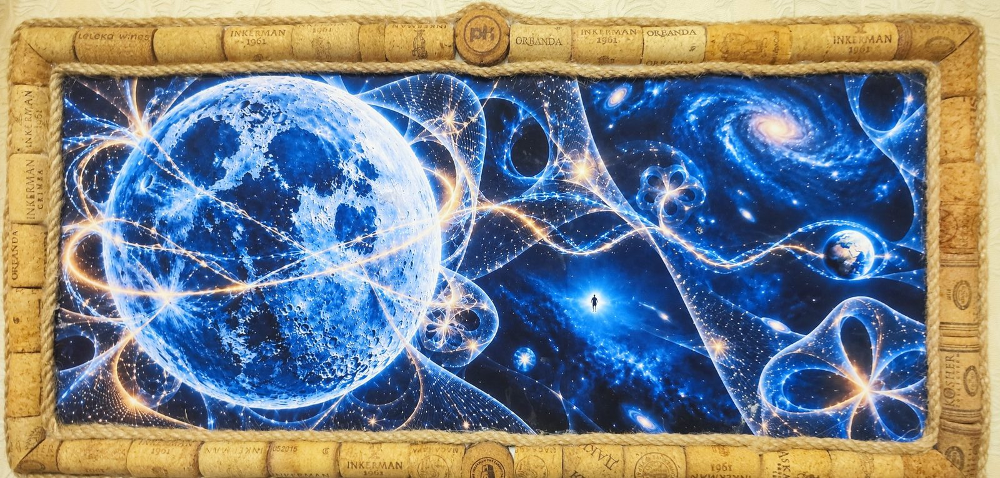
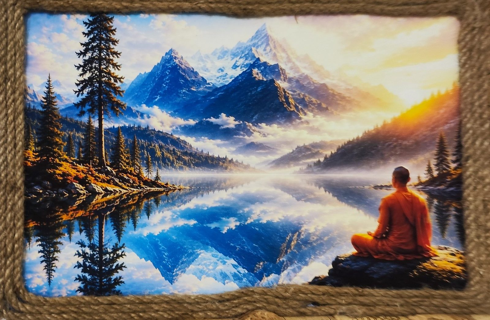
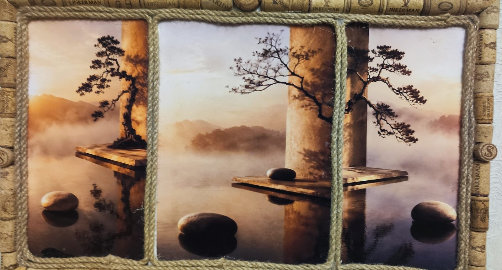
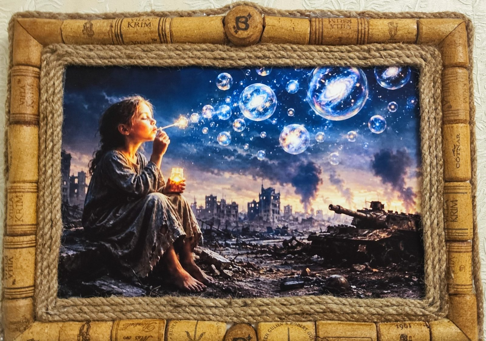

Галерея
Арт-сповідь
П’ять робіт у коркових рамах. У кожної — своя пісня: натисни на роботу, подивись і послухай.
✦

Космос
Блакитний місяць, галактики — і крихітна людина посеред усього цього.
№ 1 · арт-сповідь · Космос і світло · ▶ є пісня

Підводне місто
Золота риба пливе повз затоплені книги, ліхтар і драбину вгору.
№ 2 · арт-сповідь · Вода · ▶ є пісня

Монах біля озера
Гори в дзеркалі води і людина, яка просто дивиться й дихає.
№ 3 · арт-сповідь · Тиша · ▶ є пісня

Дзен-триптих
Три вікна в туман: камінь, дерево, вода. Нікуди не треба поспішати.
№ 4 · арт-сповідь · Тиша · ▶ є пісня

Дівчинка з бульбашками
Серед руїн дитина видуває бульбашки — у кожній ціла галактика.
№ 5 · арт-сповідь · Космос і світло · ▶ є пісня
×

КосмосСиній Місяць, галактики, Земля і світлові стрічки простору — а в центрі крихітна людська фігура.
винні корки · джут · друк · ручна робота · пісня — скоро
винні корки · джут · друк · ручна робота · пісня — скоро
×

Монах біля озераМонах у шафрановому медитує над дзеркальним гірським озером на світанку.
винні корки · джут · друк · ручна робота · пісня — скоро
винні корки · джут · друк · ручна робота · пісня — скоро
×

Дзен-триптихМотузка ділить картину на три вікна: бонсай на колонах, туман, камені на воді.
винні корки · джут · друк · ручна робота · пісня — скоро
винні корки · джут · друк · ручна робота · пісня — скоро
×

Дівчинка з бульбашкамиДівчинка видуває мильні бульбашки з галактиками серед зруйнованого міста. Найсильніша робота серії.
винні корки · джут · друк · ручна робота · пісня — скоро
винні корки · джут · друк · ручна робота · пісня — скоро